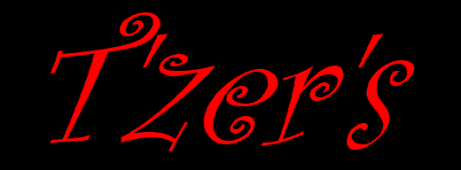

|  |
|
YS3 Late For A Good Reason
While it's pretty much a miracle that YS3 is released as often as it is, and it's usually down to sheer laziness on the part of our illustrious editor, this time we really do have a good reason for being more than a month late. Y'see, our beloved leader's had to pay a little visit to the Bristol Royal Infirmary, thanks to a spontaneous pneumothorax. For the non-medical peeps amongst you, that means one of his lungs collapsed. Still, he's out now, and he's done the HTML bit that nobody else has the time or energy to do. He says thanks for the e-mail from our lovely readers, and thanks to Jon for doing the edity business this time around. Normal service will be resumed next ish. |
|
No News Is Good News Policy Established
Because Nathan is the one who normally writes up T'zer's, and because he's been almost completely out of touch with everything since his hospital adventures started, there's no proper news this month. Ahem. Still, could be worse, eh? At least this gives you a good reason to go and read the rest of the magazine. There's some nice features this month, y'know. Oh, and it's Jamie's birthday this month. Er... (Can I stop typing now?) (Oh, go on then. Ed) Phew. |
| Back to Pssst! |